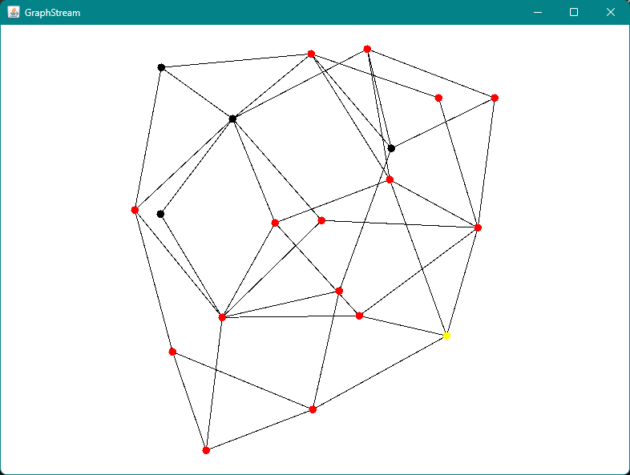
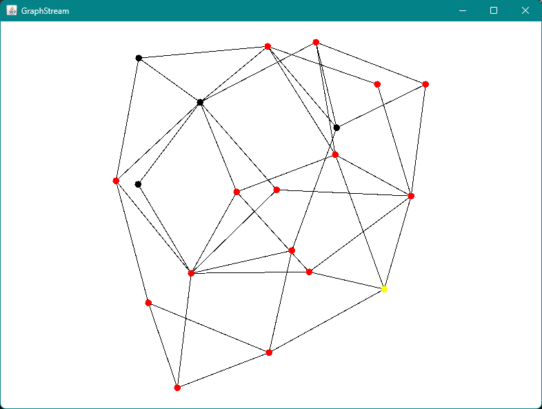
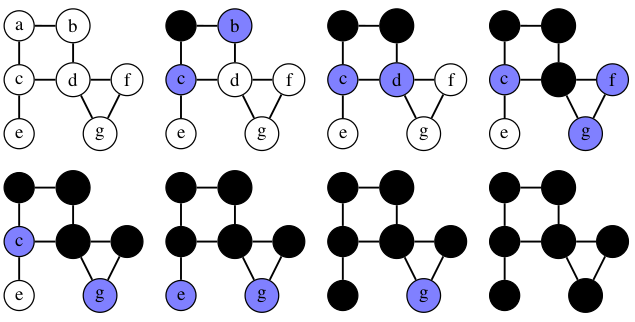
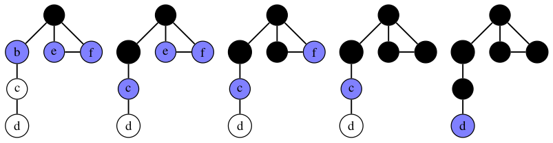
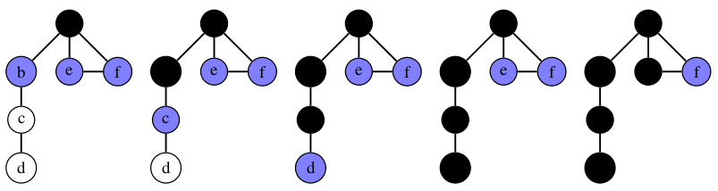

Un TP pour nous initier au classes.
Le sujet consisté à générer un graphe par rapport a des données donner.
Un TP pour nous initier au classes.
Le sujet consisté à générer un graphe par rapport a des données donner.
Un TP basé sur les différent type de parcours possible
  Pour voir le code en entier, n'hésitez pas à aller sur répértoire git TP Graphe.